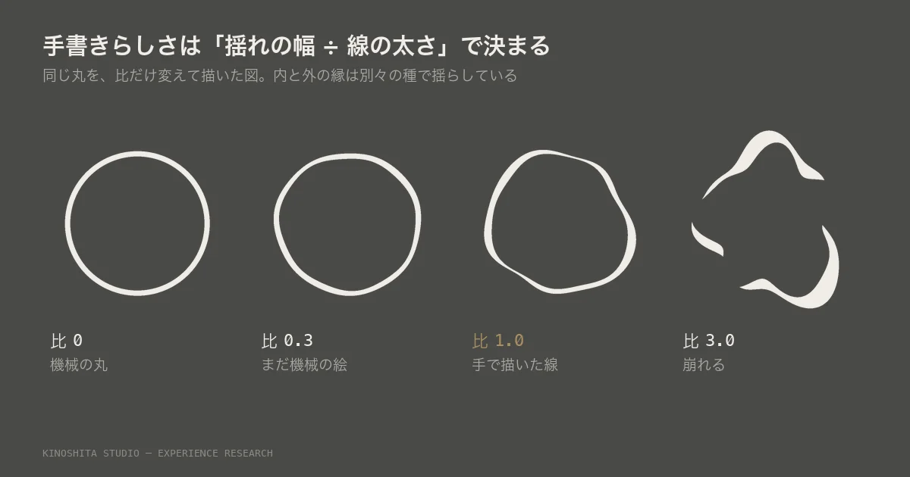
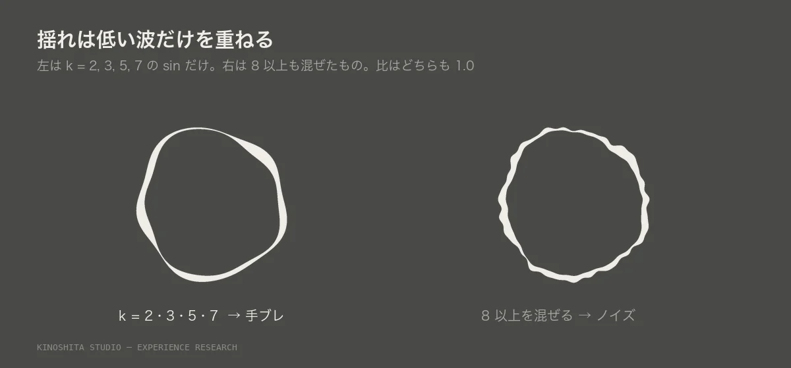
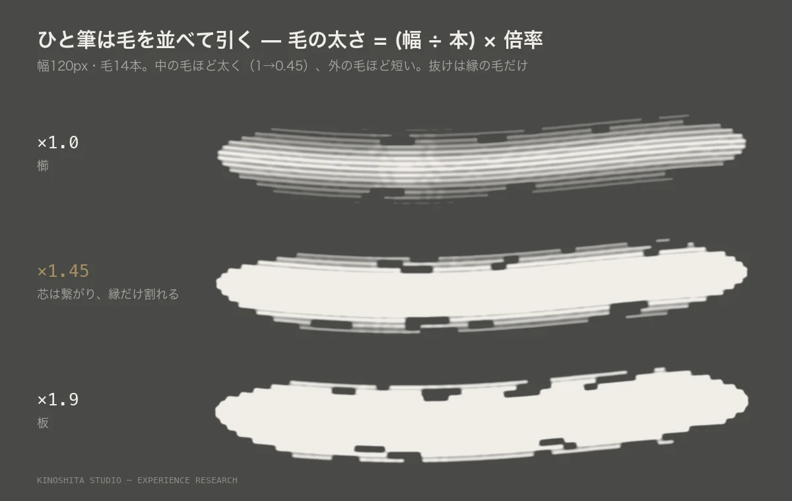

手書きの感じがほしくて、ベジェの点を手で数個打った。どう揺らしても、角が丸いだけの幾何にしかならなかった。幾何でも手書きでもない、いちばん中途半端な形だ。そこで線を手で描くのをやめて、計算で組み直した。

一画を「中心線と太さの列」として組む
線を1本の stroke として引かない。左右のふちを閉じた塗りにする。段は6つある。
| 何をするか | どのつまみになるか | |
|---|---|---|
| ① | 骨を張力つきのスプラインで通す | 張力を0に近づけると角が立つ。これが切れ味 |
| ② | 弧の長さで等間隔に取り直す | — |
| ③ | 中心線を法線の向きに、低い波で揺らす | ふるえ |
| ④ | 太さを sin の山で作る。両端を細く | 入り抜き。終わりが点で終わると切れる |
| ⑤ | 向きによって太さを変える | 抑揚。平ペンを傾けて持った太細 |
| ⑥ | 終わりから接線の向きに伸ばして消す | 跳ね |
一画ごとに別の種（seed）を使う。同じ字を二度描いても同じ形にならない。手書き「風」で止まらず、本当に不揃いになる。
決めるのは「揺れの幅 ÷ 線の太さ」
丸を描いて手ブレで出せないかと Photoshop で試した。出せた。手書きらしさを決めていたのは、揺れの幅を線の太さで割った比ひとつだった。
| 比 | 見え |
|---|---|
| 0 | 機械の丸 |
| 0.3 | 少し歪んだ丸。まだ機械の絵 |
| 1.0 | 手で描いた線に見える |
| 3.0 | 崩れる |
線が「切れる・膨らむ」のは、1本の線を揺らしても出ない。内の縁と外の縁を別々の種で揺らすと出る。縁どうしが近づいた所で線が痩せて消え、離れた所で膨らむ。2本の縁の差を塗る。螺旋を写していて偶然できた手書きっぽい線も、正体はこれだった。揺れが ±3px に対して線が 2.5px しかなく、揺れに負けて切れていた。

揺れは低い波だけを重ねる。sin の k＝2、3、5、7 まで。8 以上を混ぜると手ブレでなくノイズになる。人の手は速く震えない。
Photoshop では、パスを作ってブラシでなぞる。太さのゆらぎとかすれは、パスを短い区間（28個）に分け、区間ごとに径を変えて引く。たまに引かない区間を作る。
ひと筆は毛を並べて引く
ブラシで組むポスターを作ったとき、丸筆1本を太くしても筆跡にならなかった。のっぺりした角丸の棒になる。細い線を等間隔に並べると、今度は櫛に見える。本物の筆跡は、芯は繋がっていて、割れるのは縁だけだ。

| 倍率 | 見え方 |
|---|---|
| ×1.0 以下 | 櫛。線が1本ずつ独立して見える |
| ×1.45 | 芯だけ繋がって、縁が割れる |
| ×1.9 以上 | 板。全部埋まって筆に見えない |
境目は画素で測って出した。そのうえで3つ足す。
- 中の毛ほど太く、外の毛ほど細く（1 から 0.45 へ）。
- 端は外の毛ほど短く切る。穂先が割れる。
- 毛を飛ばす抜けは、縁の毛だけに効かせる。芯を抜くと穴になって筆に見えない。
筆跡を作るときは、幅・毛の本数・毛の太さの3つに分けて持つ。質感は形を増やしても出ない。隙間の作り方で出る。
濃さは、ひと筆ぶんに掛ける
なぞった線分ごとに濃さを足していくと、ゆっくり引いただけで真っ黒になる。同じ 0.5 でも、速く引けば薄く、遅く引けば濃い。それではつまみが値を持っていない。
- 指を置いた瞬間に、いまの絵の控えと、ひと筆を貯める紙の2枚を作る。
- なぞっている間は、貯める紙に濃さ 1 で描く。重なっても白いまま。
- 絵は毎回「控えの上に、貯めた紙を濃さで乗せる」で組み直す。足さない。
- 指を離したら2枚を捨てる。次のひと筆はまた 0 から。
Photoshop と同じ振る舞いになる。靄 MOYA のレイヤーマスクで測ると、組み直してもひと筆 0.2〜0.3ms だった。
必ず踏む不具合
- 跳ねを全部の画に付けると、輪になる画が閉じて塗り潰れる。B のふところなど。始点と終点の距離が線の長さの 0.42 未満なら、跳ねを付けない。
- 枠から溢れる。高さからしか大きさを決めていなかった。組み幅からも決め直す。
- 縦にまっすぐな筆は定規に見える。斜めにするか、曲げる。
かすれは、相手を見て足す
かすれは厳粛で伝統的な方へ振れる。気軽さや新しさを求めている相手には逆に効く。手の跡は残して、なめらかで太い一筆にとどめる方が、効く範囲が広い。細い筋が何本も並ぶ見えは、墨より、彫った線やなぞった線に読める。そこは使える。